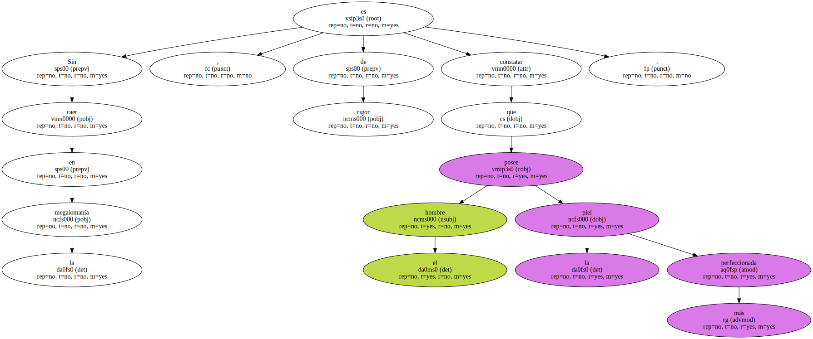
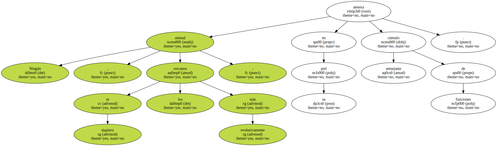
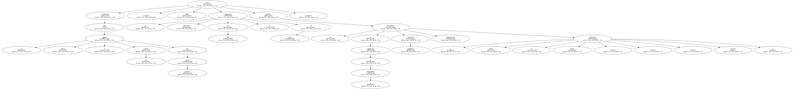
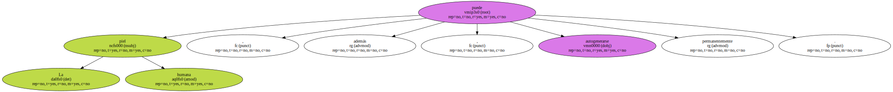
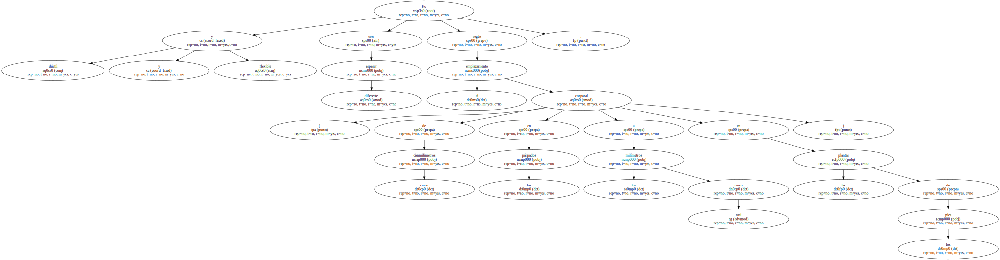
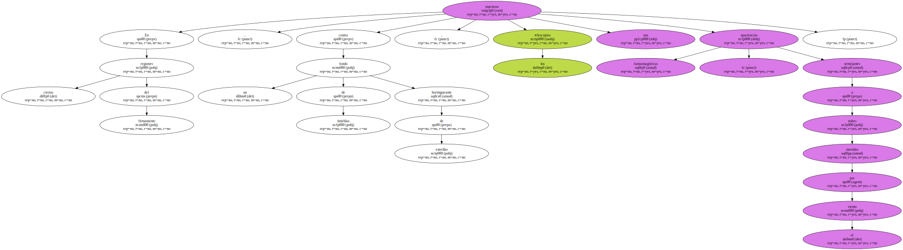
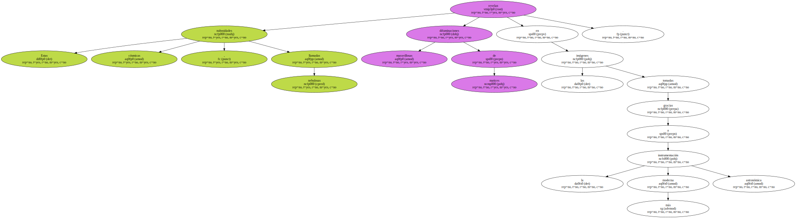
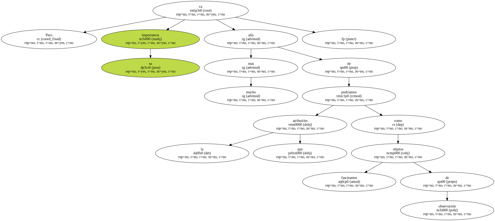
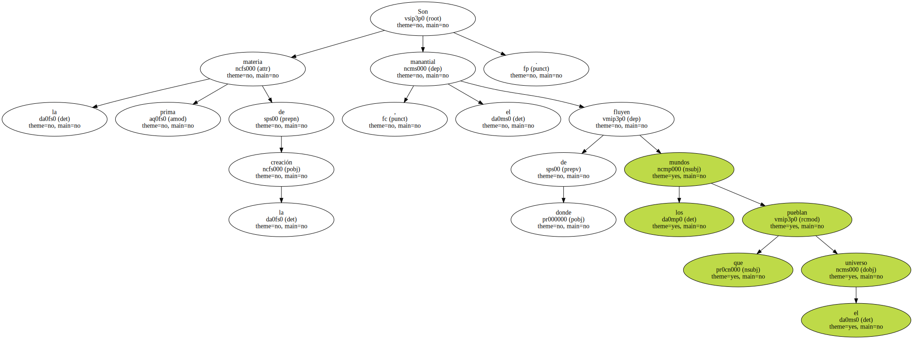

También la comunicación puede tener su vehículo en la piel de los animales.

Sin caer en la megalomanía , es de rigor constatar que el hombre posee la piel más perfeccionada.
Ningún animal , ni siquiera los evolutivamente más cercanos , atesora en su piel semejante cúmulo de funciones.
Considerada como el mayor y más extenso órgano del cuerpo humano , hace posible la adaptación inmediata al frío o al calor mediante sus mecanismos de regulación de la temperatura ( mayor o menor circulación sanguínea , pigmentación , sudoración , etcétera ).
La piel humana puede , además , autogenerarse permanentemente.
Es dúctil y flexible y con diferente espesor según el emplazamiento corporal ( de cinco cienmilímetros en los párpados a los casi cinco milímetros en las plantas de los pies ).
En ciertas regiones del firmamento , contra un fondo de tinieblas hormigueante de estrellas , los telescopios nos muestran apariencias fantasmagóricas , semejantes a nubes movidas por el viento.
Estas nubosidades cósmicas , llamadas nebulosas revelan maravillosas difuminaciones de matices en las imágenes tomadas gracias a la más moderna instrumentación astronómica.
Pero su importancia va mucho más allá de la que podríamos atribuirles como fascinantes objetos de observación.
Son la materia prima de la creación , el manantial de donde fluyen los mundos que pueblan el universo.
